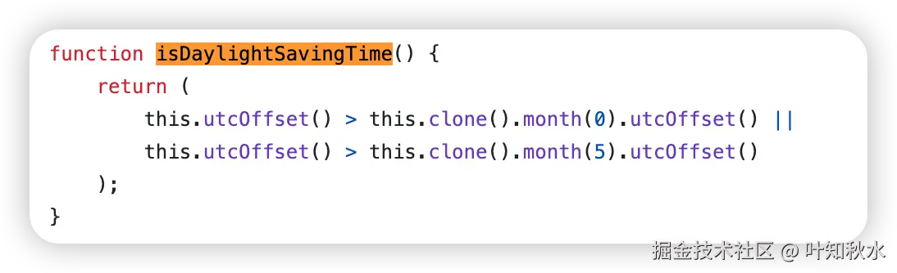

HaoTian · 2024-11-16 20:06:49
时区（Time Zone）是指地球上基于经度划分的时间区域，用于协调全球各地的时间。每个时区有一个标准时间，通常以协调世界时（UTC）为基准来定义偏移量，例如 UTC+8 就表示比 UTC 快 8 个小时。
夏令时（Daylight Saving Time）是某些国家或地区在夏季将时钟调快一小时的制度，以充分利用日照时间。夏令时通常从春季开始，到秋季结束。时区在进入和退出夏令时时会有时间上的切换。
概念最早由美国政治家本杰明·富兰克林提出，他在 1784 年就曾建议人们在夏季更早起床，以充分利用自然光，从而节约蜡烛的使用。然而，直到 20 世纪初，随着工业化的发展，夏令时才得到了广泛的实施。尤其是在两次世界大战期间，许多国家为了节约能源，开始实行夏令时。通过提前将时间拨快一小时，夏季的日照时间可以更长地照射到工作时段，降低了电力消耗。
随着夏令时的普及，它逐渐成为了很多国家应对季节性日照变化、提高效率的一种措施。然而，夏令时并非在所有国家或地区普遍适用。不同的国家根据自身的地理位置、气候条件和历史背景，决定是否实行夏令时。例如，热带地区和赤道附近的国家由于日照时间变化不大，通常不实施夏令时，而温带国家和高纬度国家则更加依赖这一制度。
计算机系统使用 IANA 时区数据库（例如 "Asia/Shanghai"、"America/New_York"）来管理时区。IANA 时区数据库标准化了世界各地的时区信息，并包括夏令时切换信息。
例如：
在多时区应用中进行时间转换时需要考虑以下因素：
为了排除干扰因素，在处理时区我们要遵循一个原则：
在存储或处理时间时，以 UTC 格式储存（避免受到用户所在地的时区影响），然后在需要显示的地方将 UTC 转换为用户所在的时区
JavaScript 中的 Date 对象基于 UTC 时间，可以使用 Intl.DateTimeFormat 和 toLocaleString 方法格式化为特定时区时间。此外，还可以使用 Intl API 的 timeZone 选项处理时区差异。
由于 JavaScript 中的时间和时区处理较为复杂，很多开发者使用第三方库（如 Moment.js 和 Luxon）来简化时间管理。
// 使用 Luxon 格式化为特定时区的时间
const { DateTime } = require("luxon");
const dt = DateTime.now().setZone("America/New_York");
console.log(dt.toString()); // 输出纽约时间
获取当前时区
获取当前时区有不同的方法，最直接和推荐的方法是利用 Intl.DateTimeFormat 对象，它可以直接返回用户所在的时区
const timeZone = Intl.DateTimeFormat().resolvedOptions().timeZone;
console.log(timeZone); // 输出类似 "Asia/Shanghai"
也可以使用使用 Date 对象和 UTC 偏移量，用 Date 对象的 getTimezoneOffset() 方法。这个方法返回用户所在时区与 UTC 的分钟差。
const offset = new Date().getTimezoneOffset();
console.log(offset); // 例如 -480，表示 UTC+8
const offsetHours = -offset / 60;
console.log(offsetHours); // 输出 8 表示 UTC+8
是否存在夏令时
可以通过检查日期对象的 UTC 偏移量来判断是否处于夏令时。
夏令时期间的 UTC 偏移量通常不同于标准时间。例如，某些时区在夏令时期间会比标准时间少 60 分钟。通过对比一年中不同月份的偏移量，我们可以判断当前是否在夏令时。
function isDaylightSavingTime() {
const january = new Date(new Date().getFullYear(), 0, 1); // 一月
const july = new Date(new Date().getFullYear(), 6, 1); // 七月
const current = new Date();
// 比较一月和七月的时区偏移
const stdTimezoneOffset = Math.max(
january.getTimezoneOffset(),
july.getTimezoneOffset()
);
const isDST = current.getTimezoneOffset() < stdTimezoneOffset;
return isDST;
}
console.log(isDaylightSavingTime()); // 如果当前处于夏令时，则返回 true，否则返回 false
在这里，一月和七月分别代表通常不使用夏令时的月份。如果当前月份的偏移量小于这两个月份中的最大偏移量，则说明当前是夏令时。
虽然 Intl.DateTimeFormat 没有直接给出夏令时的信息，但在一些系统中可以通过时区名称和日期来获取大致信息：
function isDaylightSavingTimeIntl() {
const date = new Date();
const timeZone = Intl.DateTimeFormat().resolvedOptions().timeZone;
// 获取当前时区偏移和标准时间偏移
const dtf = new Intl.DateTimeFormat("en-US", {
timeZone,
timeZoneName: "short",
});
const parts = dtf.formatToParts(date);
// 查看短时区名称是否包含夏令时标记 (例如 "PDT" 而不是 "PST")
const timeZoneName = parts.find((part) => part.type === "timeZoneName");
return timeZoneName ? timeZoneName.value.includes("D") : false;
}
console.log(isDaylightSavingTimeIntl()); // 如果当前处于夏令时，则返回 true，否则返回 false
在一些时区中，短时区名称会用 D 表示夏令时，例如 “PDT” 表示太平洋夏令时，而 “PST” 表示标准时间。如果名字包含 D，则表示夏令时启用。
使用第三方库
如果项目中使用了 moment-timezone 库，可以直接使用它来检查当前是否为夏令时。这个方法适合需要精准时区信息的应用。
const moment = require("moment-timezone");
function isDaylightSavingTimeMoment() {
const timeZone = moment.tz.guess();
return moment.tz(timeZone).isDST();
}
console.log(isDaylightSavingTimeMoment()); // 如果当前处于夏令时，则返回 true，否则返回 false
在 moment-timezone 库里，本质上也是使用了上面的方法。
前面的例子中提到了 Inel 对象，Intl 对象是 JavaScript 的国际化 API，提供了一系列工具，用于处理语言敏感的字符串、数字、日期、货币等内容的格式化。它帮助开发者根据用户的本地设置自动调整格式，适用于多语言、多地区应用。
Intl 对象是随着 ECMAScript 2015（ES6）标准推出的，首次在主流浏览器中出现大约是在 2015 年。自那以后，Intl 的功能不断扩展，以支持更多的国际化特性。
总体来说，Intl 对象的基本功能（如 Intl.DateTimeFormat, Intl.NumberFormat, 和 Intl.Collator）在现代浏览器中的兼容性非常好。但需要注意的是，一些较新的特性（如 Intl.RelativeTimeFormat, Intl.ListFormat, 和 Intl.PluralRules）是在 ECMAScript 2018 及之后的版本中引入的，因此它们的兼容性在早期浏览器和旧设备上可能不如基本功能。
以下是主要特性和它们的兼容性：
基础 Intl 对象（DateTimeFormat, NumberFormat, Collator）：
Intl.RelativeTimeFormat（相对时间格式）：
Intl.ListFormat（列表格式化）：
Intl.PluralRules（复数规则）：
Intl.DisplayNames（地区名称格式化）：
如果需要在不支持 Intl 对象的环境中运行代码，可以考虑以下解决方案：
在处理时区问题时，我们需要注意一些关键点，以避免因时区差异导致的数据不一致或逻辑错误。
1. 理解 Date 对象的 UTC 基准
JavaScript 的 Date 对象内部存储的时间是基于 UTC 时间的，而不是本地时间。Date 的各类方法，如 getTime()，返回的是相对于 UTC 的时间戳。因此，在存储或传输时间时，建议使用 UTC 格式，确保时区转换的一致性。
const now = new Date();
console.log(now.getTime()); // 返回 UTC 时间戳
但当我们使用new Date()或者getHours()这些方法时，是基于本地时区的，而不是 UTC。
getHours() 返回本地时区的小时。如果需要 UTC 时间，则需要使用 getUTCHours() 方法。
const date = new Date(); // 当前时间
console.log("本地时间的小时数:", date.getHours()); // 返回本地时区的小时数
console.log("UTC 时间的小时数:", date.getUTCHours()); // 返回 UTC 时区的小时数
当通过 new Date(timestamp) 创建一个 Date 实例时，JavaScript 会根据本地时区来显示时间
const timestamp = 1700000000000;
const date = new Date(timestamp);
console.log("本地时间:", date.toString()); // 输出本地时间
console.log("UTC 时间:", date.toUTCString()); // 输出 UTC 时间
在本地时间（例如 UTC+8 时区）下可能会显示为 2023-11-14 22:13:20，而 UTC 显示为 2023-11-14 14:13:20。
2. 避免直接操作 Date 对象来转换时区
Date 对象提供了一些转换本地和 UTC 时间的方法，但直接操作可能会导致复杂的代码，尤其是在涉及夏令时（DST）转换时。使用 toLocaleString 和 Intl.DateTimeFormat 等内置方法更为安全。
// 不建议手动转换偏移量，可能导致错误
const localDate = new Date();
const utcDate = new Date(
localDate.getTime() + localDate.getTimezoneOffset() * 60000
);
夏令时会导致某些地区的时区偏移量在夏季改变（例如纽约从 UTC-5 转为 UTC-4）。处理夏令时切换时，不建议依赖硬编码的时区偏移值，而是使用 Intl.DateTimeFormat 或第三方库，如 Luxon，它们可以根据当前日期自动调整时区偏移。
PS:中国也曾经在上个世纪实行过几年夏令时。
3. 存储时间的格式
在跨时区应用中存储时间数据时，使用 UTC 时间戳可以确保在不同地区显示一致。例如，将时间存储为 UTC 格式，并在前端使用用户所在时区显示。
const utcNow = new Date().toISOString(); // 推荐将时间存储为 UTC ISO 格式
console.log(utcNow); // 例如："2024-11-15T10:30:00.000Z"
这里解析一下 ISO 格式和时间戳的区别。
时间戳，通常指 Unix 时间戳，表示从 1970 年 1 月 1 日（UTC 时间）到特定时间的秒或毫秒数（如 1700000000000，以毫秒计）。它不包含任何时区信息。
ISO 格式 一般指 ISO 8601 标准，它是一种国际标准化的日期和时间表示方法，提供了一种全球通用的、易读的时间格式。它广泛用于数据库、API、前端和后端系统等，具有良好的跨平台兼容性。ISO 格式的时间字符串按标准化的顺序排列，方便排序和解析。
以下是 ISO 8601 格式的一些常见表示形式： (YYYY-MM-DDTHH:mm:ss.sssZ) 是一种标准化的日期时间格式，被广泛支持并易于解析。
4. 不要写死时区偏移量
Date.getTimezoneOffset() 可以返回本地时间与 UTC 的差值，单位为分钟。虽然它提供了当前时区的偏移信息，但在夏令时的切换期间，偏移量会发生变化。避免依赖固定的偏移量，而应根据需求动态获取。
const offset = new Date().getTimezoneOffset();
console.log(offset); // 当前时区与 UTC 的差值，例如 -480 表示 UTC+8
另外，部分国家或地区可能更改时区或夏令时的切换规则。保持时区数据库（如 Intl API 使用的 IANA 数据库）最新可以避免时间转换错误。如果使用 Node.js，可以通过 full-icu 包更新 ICU 数据库，确保支持最新的时区数据。